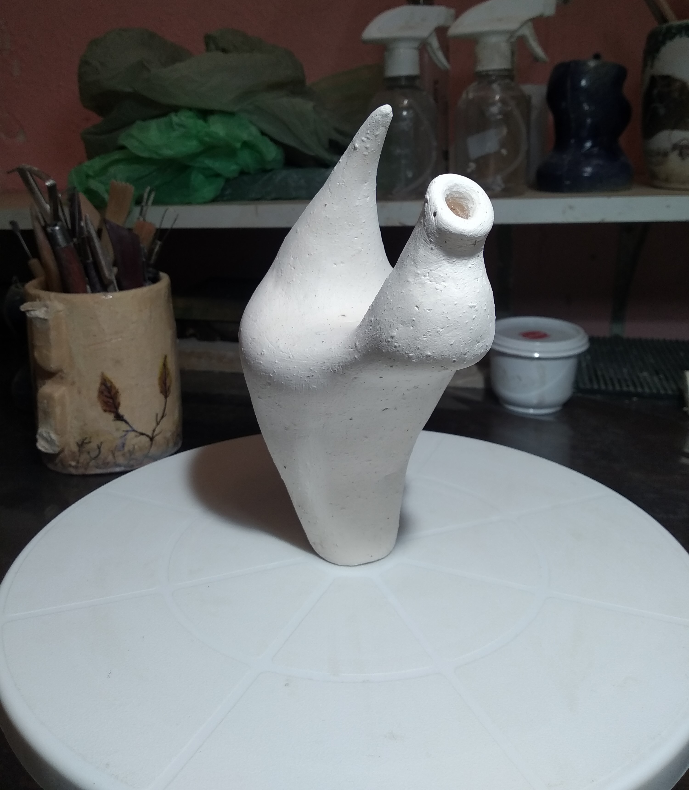
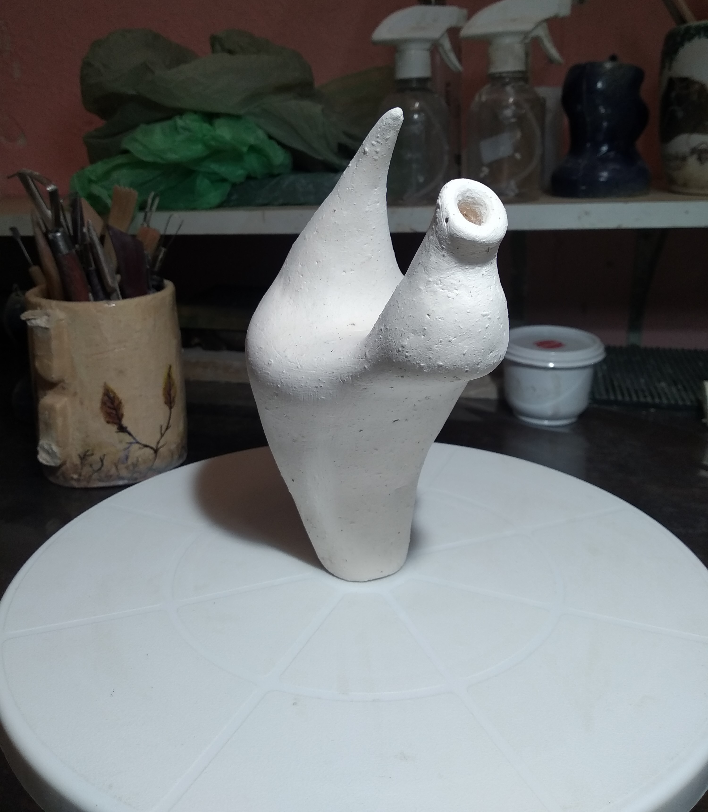
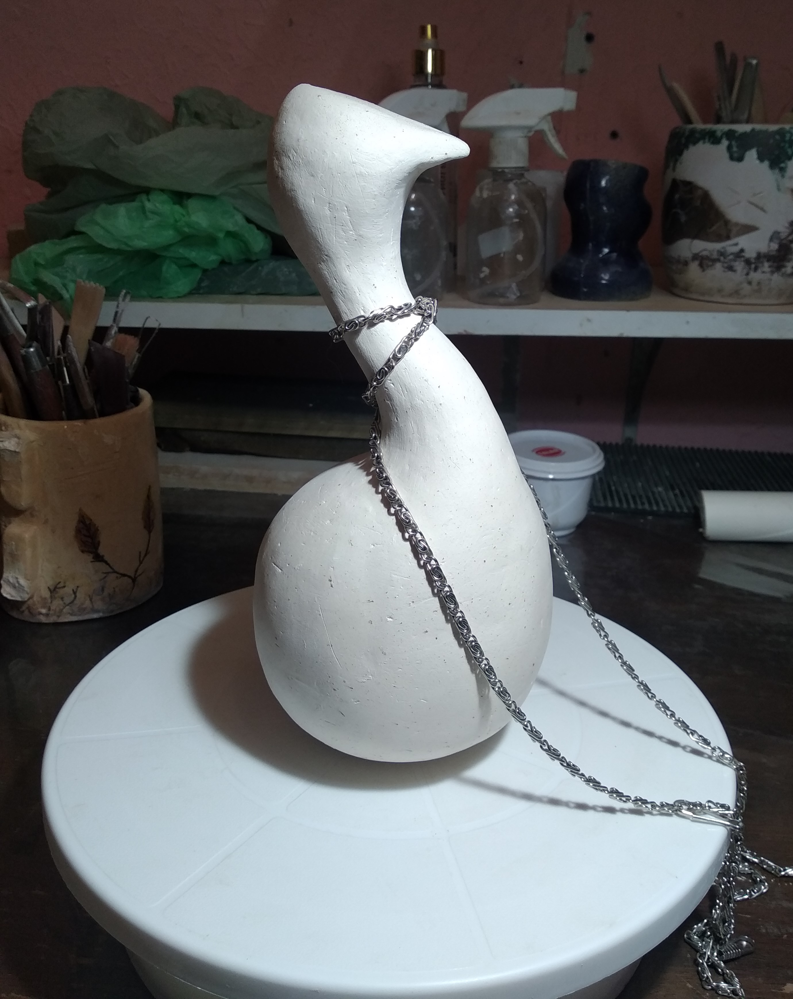
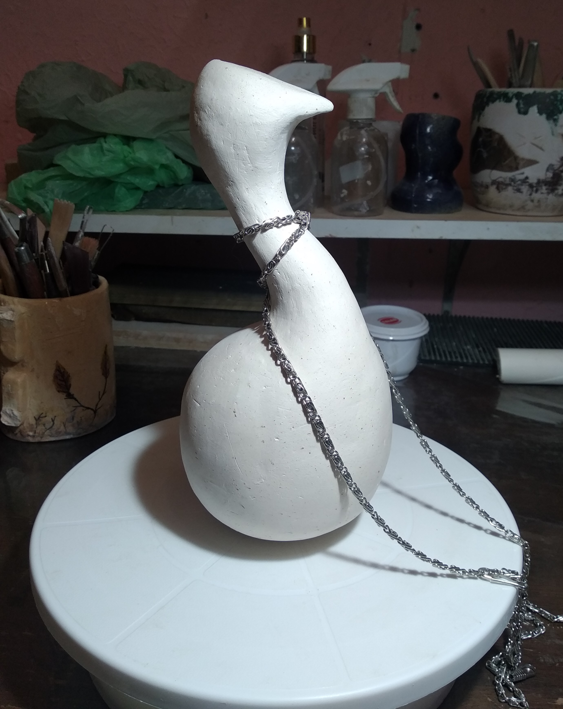

Diseño
A muy grandes rasgos, el diseño no es más que la imaginación de un objeto, es decir, su concepción atendiendo a la forma, el aspecto, la funcionalidad, la operatividad y la vida útil del mismo. Los diseñadores, por ende, no hacen más que crear objetos físicos, gráficos o de cualquier otra índole, que sirvan para un fin específico y establecido de antemano. Por ejemplo, un diseñador industrial puede prefigurar piezas de maquinaria para automóviles, o bien formas más eficientes de cañería, mientras que otros podrán dedicarse a crear muebles, juguetes, teléfonos, etc. En mi caso no es diferente, es la imaginación del objeto , lo dibujo y luego preparo con una técnica que se llama centimetrada para luego poder construirlo en cerámica a escala.
Tecnica Centimetrada
Tecnica Centimetrada en Libertad

 

En este caso, el ejemplo que traigo es la previa del Jarrón Libertad. En la primera fotografía se puede ver el bosquejo, la idea; en la segunda fotografía está el comienzo de la construcción, dibujo técnico, se dibuja a escala el tamaño que quieras construir , en este caso era la maqueta, no tenía más de 18 cm y, por último, la fotografía del bizcocho de la maqueta del Jarrón Libertad.
Tecnica Centimetrada en Prisionera

 

Este es el ejemplo de Prisionera. La primera fotografía igual que la anterior se trata del bosquejo, después dibujo a una escala pequeña de aproximadamente 18 cms el alzado en hoja centimetrada, marco el eje y dibujo la cantidad de círculos necesaria, y la última fotografía es el bizcocho de la maqueta.
Esta técnica se trata de dibujar a escala lo que quieres hacer, en una hoja centímetrada, luego dibujas el eje y simplemente marcas la cantidad de círculos que vas a necesitar, es un alzado de tu pieza. Luego se cortan los círculos de papel y en el taller en una plancha de barro de aproximadamente 1 cm de ancho se usa como molde. De esa forma se colocan una sobre otra de acuerdo al dibujo y se construye la forma deseada. Fue increíble cuando me enseñaron este método porque me permite construir a escala. De todas formas los jarrones que diseño no son simétricos por lo tanto en general utilizo otros métodos para complementar.